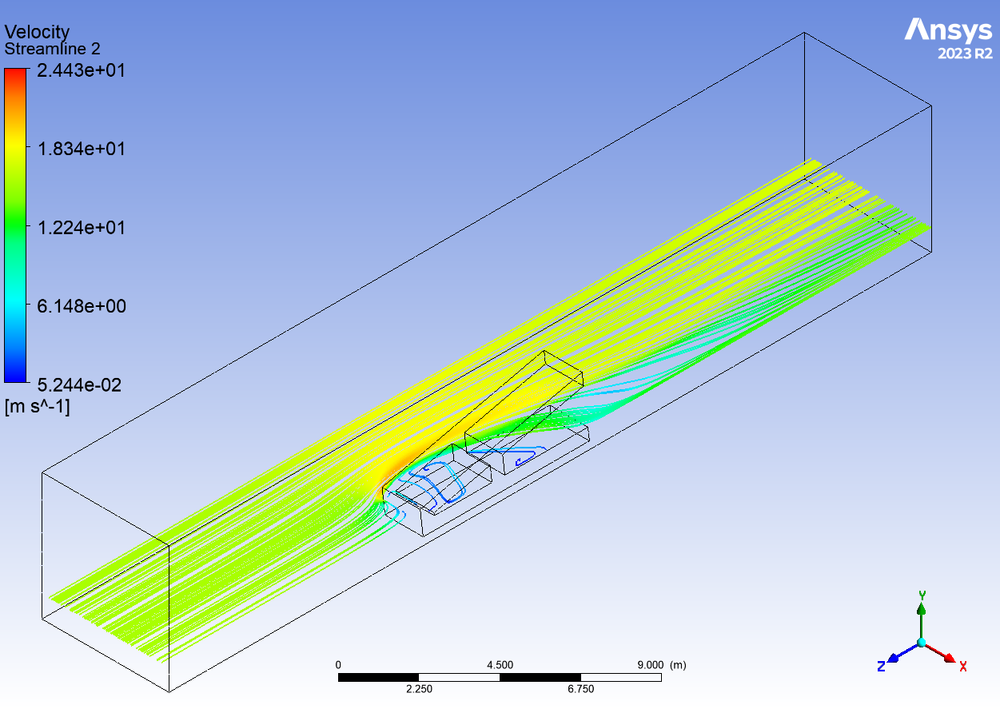

Computational Fluid Dynamics
Home
Through my education at the University of Alberta, I enrolled in an optional Computational Fluid Dynamics course.
This course started with the theory of how CFD programs work, diving into the formulae and the math behind the computing.
Later on we performed various tutorials in ANSYS CFX, looking at methods of boundary condition applications,
meshing, analysis convection schemes, and turbulence models. Each tutorial was followed by a lab assignment
where learning outcomes were tested.
The labs consisted of flows over a cylinder, through a plenum, and over a sharp step in a wind tunnel. The final
lab was designed to incorporate all aspects learned in previous labs, and each student was permitted to design their
own geometry. I chose to analyze flow over the letter A in a wind tunnel.

I am currently writing the final report, but when it is finished I will attach it here.